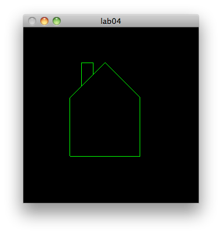

Have practical experience with the point and line openGL primitives
Be able to design a model file format that could be rendered using these primitives.
Be able to load a model from file
Be able to render this model using this initial primitive set.
In Eclipse, copy the last lab, and paste it as "lab02a_primitives".
Rename the single source file to "primitives.cpp".
Completely replace all source with the following:
#include "libopengl.h"
void renderScene(void)
{
glClear( GL_COLOR_BUFFER_BIT);
///
glFlush();
}
void setupRC()
{
glClearColor(0.0f, 0.0f, 0.0f, 1.0f);
glColor3f(0.0f, 1.0f, 0.0f);
glOrtho (-100.0f, 100.0f, -100.0f, 100.0f, -100.0f, 100.0f);
}
int main(int argc, char* argv[])
{
glutInit(&argc, argv);
glutInitDisplayMode(GLUT_SINGLE | GLUT_RGB);
glutCreateWindow("lab04");
glutInitWindowSize(800,600);
glutDisplayFunc(renderScene);
setupRC();
glutMainLoop();
return 0;
}
void points()
{
}
void renderScene(void)
{
glClear( GL_COLOR_BUFFER_BIT);
points();
glFlush();
}
glBegin( GL_POINTS);
glVertex3f(0.0f, 0.0f, 0.0f);
glVertex3f(50.0f, 40.0f, 0.0f);
glVertex3f(50.0f, 50.0f, 50.0f);
glEnd();
void circlePoints()
{
}
glBegin( GL_POINTS);
float x, y, angle;
for (angle = 0.0f; angle <= (2.0f * M_PI); angle += 0.01f)
{
x = 50.0f * sin(angle);
y = 50.0f * cos(angle);
glVertex3f(x, y, 0.0f);
}
glEnd();
You will need to include math.h for access to M_PI.
Build and test.
The point size can be varied, within certain ranges supported by the opengl implementation. Opengl must be queried to recover these ranges. Define some globals to hold them:
GLfloat sizes[2];
GLfloat step;
GLfloat curSize;
sizes will hold the min and max point size, and step will be the valid increments in this range. We use curSize for our own purposes.
In setupRC, query opengl to using for these values using this API calls:
query for GL_POINT_SIZE_RANGE and GL_POINT_SIZE_GRANULARITY
glGetFloatv(GL_POINT_SIZE_RANGE,sizes);
glGetFloatv(GL_POINT_SIZE_GRANULARITY,&step);
curSize = sizes[0];
Now we can set the point size in circlePoints() using this api call:
glBegin( GL_POINTS);
float x, y, angle;
for (angle = 0.0f; angle <= (2.0f * M_PI); angle += 0.01f)
{
x = 50.0f * sin(angle);
y = 50.0f * cos(angle);
glPointSize(curSize);
glVertex3f(x, y, 0.0f);
curSize+=step;
}
glEnd();
Build and test. Note that the point size does not seem to vary at all.
This is because the call to glPointSize must occur before the primitive is signalled with glBegin(GL_POINTS). Refactor the code as follows:
void circlePoints()
{
float x, y, angle;
for (angle = 0.0f; angle <= (2.0f * M_PI); angle += 0.01f)
{
x = 50.0f * sin(angle);
y = 50.0f * cos(angle);
glPointSize(curSize);
glBegin( GL_POINTS);
glVertex3f(x, y, 0.0f);
glEnd();
curSize+=step;
}
}
Review the GL_LINE_LOOP documentation here:
Introduce lineLoop function, and call from renderScene as before:
void lineLoop()
{
glBegin( GL_LINE_LOOP);
glVertex3f(0.0f, 0.0f, 0.0f);
glVertex3f(50.0f, 50.0f, 0.0f);
glVertex3f(50.0f, 100.0f, 0.0f);
glEnd();
}
Build and test
We can also refactor the circlePoints method, to use lines instead to draw the circle:
void circleLines()
{
glBegin(GL_LINE_LOOP);
float x, y, angle;
for (angle = 0.0f; angle <= (2.0f * M_PI); angle += 0.01f)
{
x = 50.0f * sin(angle);
y = 50.0f * cos(angle);
glVertex3f(x, y, 0.0f);
}
glEnd();
}
Build and test
An example of varying line widths:
void linesWidth()
{
float y;
glClear(GL_COLOR_BUFFER_BIT);
for(y = -90.0f; y < 90.0f; y += 20.0f)
{
glLineWidth(curSize);
glBegin(GL_LINES);
glVertex2f(-80.0f, y);
glVertex2f(80.0f, y);
glEnd();
curSize += 1.0f;
}
}
This example assumes currSize has been acquired from opengl
Finally, a line pattern or stipple can be specified:
void lineStipple()
{
float y;
int factor = 3;
short pattern = 0x5555;
glClear(GL_COLOR_BUFFER_BIT);
for(y = -90.0f; y < 90.0f; y += 20.0f)
{
glLineStipple(factor,pattern);
glBegin(GL_LINES);
glVertex2f(-80.0f, y);
glVertex2f(80.0f, y);
glEnd();
}
}
Build and Test. Note that this last example does not produce the desired pattern. Stippling must be explicitly turned on:
glEnable(GL_LINE_STIPPLE);

Use GL_LINE_STRP instead of GL_LINE_LOOP.
This drawing essentially consistes of two line loops, one for the house structure and one for the chimney
For the house defined in 1, compose a text file that contains the the vertices only + some supporting information. Eg: the following file format:
line 1: Number of line loop sequences
line 2: Number of vertices in first sequence
line 3-n: Vertices for first line loop, 2 per line
line n+1: Size second line loop sequence (if any)
line n+2: vertices for second sequence, 2 per line
...
For the house, the file might be:
2
6
40 40
40 90
70 120
100 90
100 40
40 40
5
50 100
50 120
60 120
60 110
Some code fragments to get you going:
To open a file
fstream inStream;
inStream.open(fileName, ios ::in); // open the file
if(inStream.fail())
return;
int numlines;
inStream >> numLines;
inStream >> x >> y;
#include <fstream>
using namespace std;
Here is another model file defined using the format specified above:
Inspect this file. Note the max/min coordinates. Change the projection in your program, and attempt to load and draw this.
Here is another one:
If you look at this one, note that it is using floats instead of ints to define the vertices, and also that the co-ordinate system is quite different - from -1.0 to +1.0. Write a program to load and display this one.